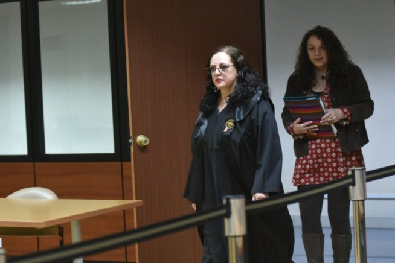

Concurso de Fiscal General: Daniella Camacho lidera la lista tras evaluación de 28 aspirantes

El proceso para designar a la máxima autoridad de la Fiscalía General del Estado continúa su curso en Ecuador. La comisión ciudadana de selección avanzó con la evaluación de méritos de los 28 aspirantes que superaron la fase de admisión, en una sesión que se extendió hasta altas horas de la noche del viernes 8 de mayo de 2026.
Camacho lidera la evaluación preliminar
En el ranking provisional, la jueza de la Corte Nacional de Justicia, Daniella Camacho Herold, encabeza la lista con la calificación más alta, alcanzando 48 puntos.
En segundo lugar se ubica la jueza de la Corte Provincial de Pichincha, Inés Maritza Romero, con 46,75 puntos, seguida por el fiscal subrogante Carlos Leonardo Alarcón, quien obtuvo 46,5 puntos.
Un proceso competitivo y con múltiples perfiles
Los puntajes en orden de calificación son los siguientes:
- Daniella Lisette Camacho Herold (Pichincha) - 48,00
- Inés Maritza Romero Estévez (Pichincha) - 46,75
- Carlos Leonardo Alarcón Argudo (Pichincha) - 46,5
- Salomón Alejandro Montecé Giler (Santo Domingo) - 46,00
- Walter Samno Macías Fernández (Pichincha) - 45,00
- Bolívar Augusto Espinoza Astudillo (Pichincha) - 42,25
- José Javier De La Gasca López-Domínguez (Guayas) - 41,00
- Gabriel Santiago Pereira Gómez (El Oro) - 39,5
- Rubén Darío Balda Zambrano (Manabí) - 39,00
- Gustavo Adolfo Benítez Álvarez (Pichincha) - 39,00
- Sandra Patricia Morejón Llanos (Guayas) - 38,25
- Luis Augusto Rosero Méndez (Pichincha) - 38,00
- José Aníbal Cevallos Álvarez (Esmeraldas) - 38,00
- Mario David Fonseca Vallejo (Napo) - 37,75
- Juan Vicente Guaño Costales (Pichincha) - 36,75
- Christian Kerlin Ayala Piedra (El Oro) - 36,50
- Mauricio Javier Aguirre López (Pichincha) - 36,5
- Bella Edit Castillo Hidalgo (Loja) - 35,5
- José Luis Robalino Villafuerte (Santo Domingo) - 35,00
- Andrea Elizabeth Cazar Villacís (Imbabura) - 35,00
- Patricio Gerardo Haro Aldean (Pichincha) - 34,05
- Karen Julissa Duque Jironza (Esmeraldas) - 34,00
- Luiggi Rigoberto Miranda Peralta (Manabí) - 31,25
- Julia Maritza Villalta García (Sucumbíos) - 31,00
- Tirsa Salomé Gómez Proaño (Pichincha) - 30,00
- Gina Fernanda Mora Dávalos (Manabí) - 29,00
- Christian Ramón Rodríguez Torres (Napo) - 25,00
- Franklin Ernesto Rea Toapanta (Pichincha) - 17,00
Próximas fases del concurso
Tras la publicación de los resultados de méritos, el proceso continuará con evaluaciones técnicas más exigentes. Estas etapas buscan medir la capacidad de análisis jurídico y resolución de casos complejos.